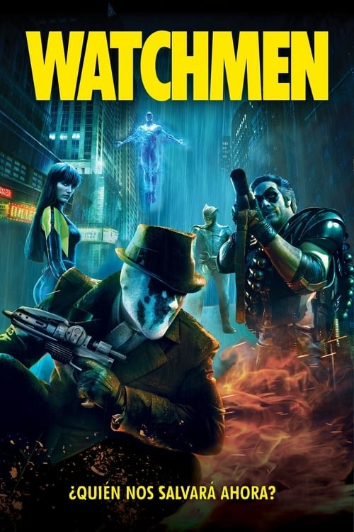

Watchmen (2009)
Sinopsis Rápida
En un mundo alternativo donde los superhéroes son tratados como criminales, un complot explosivo amenaza con desatar una guerra nuclear. ¿Podrá un grupo de vigilantes desenmascarar la verdad antes de que sea demasiado tarde?
Sinopsis Detallada
Watchmen adapta la aclamada novela gráfica de Alan Moore, presentando una oscura y compleja visión de un mundo donde los superhéroes existen, pero su legado es ambiguo y devastador. La película sigue a un grupo de ex-vigilantes que se ven obligados a reunirse para investigar una serie de asesinatos misteriosos que amenazan con desatar una guerra. Profundiza en temas de moralidad, política, y la naturaleza del heroísmo, ofreciendo una experiencia cinematográfica intensa e inolvidable. La impactante trama se complementa con una atmósfera visualmente sorprendente y un guion reflexivo.
¿Por qué tenés que verla?
- Una reimaginación oscura y compleja del género de superhéroes.
- La dirección magistral de Zack Snyder y su estilo visual único.
- Su impacto duradero en el cine de superhéroes, abriendo camino a narrativas más adultas y complejas.
- Análisis de la moralidad y el legado de los superhéroes.
Idea Extra
Comparación entre la película y la novela gráfica: Análisis de las diferencias y similitudes en la trama, personajes y temas.